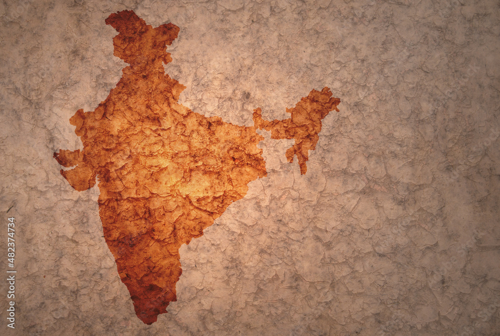

exploring India
since 1947

The Darshan website is a comprehensive platform designed to enrich spiritual & historical journeys and connect users with sacred destinations across the India.
It serves as a one-stop solution for discovering temples, pilgrimage sites, and other spiritual landmarks, providing detailed information,
historical significance, and visiting guidelines. With an intuitive interface, users can explore various locations, plan their visits, and even access features like virtual tours or
live-streamed darshans for remote participation The platform fosters community engagement through user reviews,
travel tips, and customizable itineraries, ensuring a seamless and fulfilling experience for spiritual seekers. Whether you are planning a pilgrimage or simply
exploring the cultural heritage of these sites, the Darshan website aims to be your trusted guide.